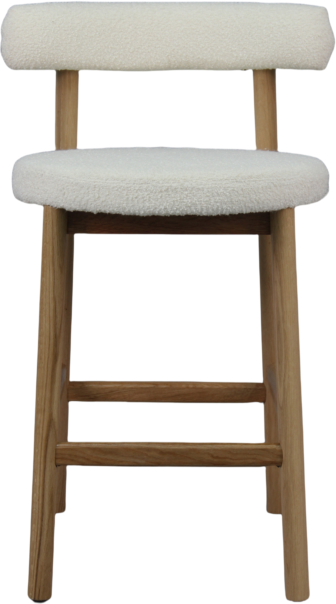
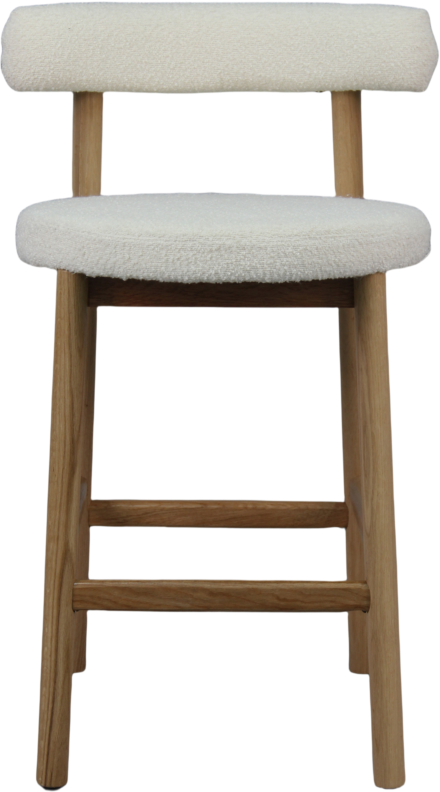

Merida bar stool with backrest, natural oak / natural white seat
198085

 


Description
Elevate your kitchen or bar area with the Merida bar stool featuring a sturdy natural oak frame paired with a soft, natural white teddy fabric seat. Designed with comfort in mind, this stool includes a supportive backrest and an ergonomic seat height perfect for most counters. Available in Gold, Silver, and Bronze tiers, Merida combines style and durability in a modern design that complements various interior styles. Part of the NEST & LIVING collection, this bar stool balances timeless craftsmanship with everyday practicality.
Technical specifications
| Material | Natural oak frame with teddy fabric seat |
|---|---|
| Color | Natural oak / Natural white |
| Dimensions (WxDxH) | 44 cm × 44 cm × 99 cm |
| Seat height | 75 cm |
| Backrest | Yes |
| Set Size | 2 pieces per pack |
| Tiers | Gold, Silver, Bronze |